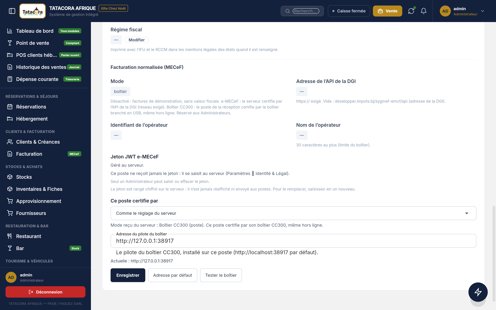
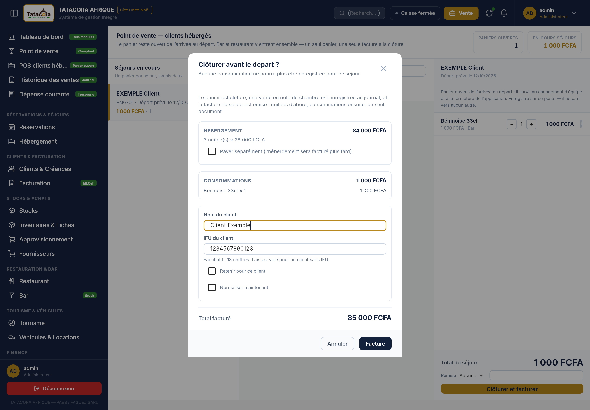
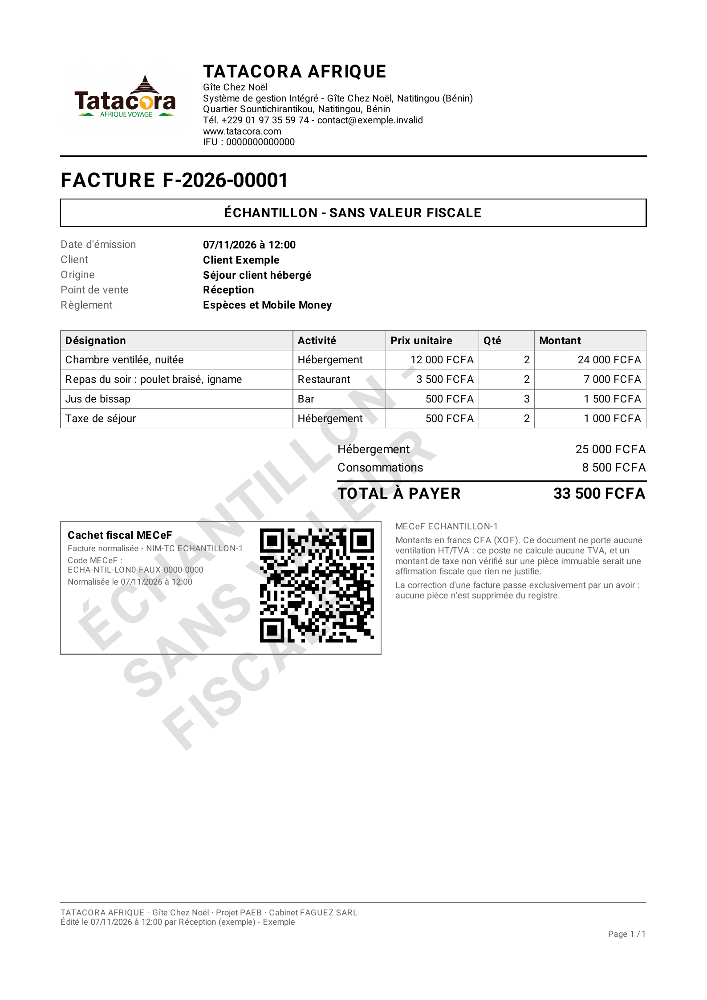

Au Bénin, une facture « normalisée » est une facture à laquelle l'administration fiscale (la DGI) a attribué un numéro et un code QR, soit par Internet (e-MECeF), soit par un petit appareil branché au poste de réception (le boîtier CC300). LogiRestock sait faire les deux. Ce chapitre dit comment cela se règle, comment on normalise une facture, et ce que le logiciel refuse.
🛑 À lire avant tout : ce n'est pas encore éprouvé sur le terrain Le dialogue avec un vrai boîtier et avec le vrai service e-MECeF de la DGI n'a été essayé que contre de faux appareils et de faux serveurs de test. Aucune facture réelle n'a encore été normalisée au Gîte. C'est pourquoi le mode livré est Désactivé : facture simple, sans aucune mention fiscale. N'activez un autre mode qu'après l'essai prévu avec le technicien (section 17.12), et jamais pendant une phase d'essais : une facture normalisée par la DGI ne s'efface pas.Un seul réglage décide du comportement de toute la facturation : le mode de facturation normalisée.
| Mode | Qui normalise | Où | Besoin d'Internet |
|---|---|---|---|
| Désactivé (mode livré) | Personne. La facture est une facture simple : « Facture », sans numéro MECeF, sans QR, sans aucune mention (ni « démonstration », ni bandeau, ni filigrane). | — | Non |
| e-MECeF (en ligne) | Le serveur, par le service de la DGI. | Serveur | Oui |
| Boîtier CC300 (poste) | Le poste de réception, par le boîtier branché en USB (le boîtier transmet lui-même à la DGI). | Poste de réception | Non, pour le poste |
Le mode se règle sur le web, par un administrateur. Il descend ensuite sur les postes, qui le reçoivent en lecture seule avec les autres réglages.
Chemin (web) Paramètres ➔ onglet Identité & Légal ➔ section Facturation normalisée (MECeF)| Réglage | Règle |
|---|---|
| IFU (Identifiant Fiscal Unique) de l'entreprise | Onglet Identité & Légal, « Informations légales & fiscales ». 13 chiffres. Il sert aux deux voies. Passer en e-MECeF ou en boîtier est refusé tant qu'il manque. |
| Mode | Désactivé, e-MECeF (en ligne) ou Boîtier CC300 (poste). |
| Adresse de l'API de la DGI | e-MECeF seulement ; doit commencer par https://. |
| Identifiant de l'opérateur et Nom de l'opérateur | Le vendeur déclaré sur chaque facture ; le nom fait 30 caractères au plus (limite du boîtier). |
| Jeton JWT e-MECeF | Le « mot de passe » délivré par la DGI pour e-MECeF. Saisi au web seulement, en champ masqué ; il est rangé chiffré et affiché ensuite sous la forme « ••• enregistré le … ». Il ne descend jamais sur un poste, n'apparaît dans aucun journal et ne se réaffiche jamais. Pour le remplacer, on en saisit un nouveau ; on peut l'effacer, après confirmation. |
Comme le boîtier n'existe que sur un poste, celui-ci a un réglage local dans la même section (réservé aux administrateurs du poste) :
http://localhost:38917 par défaut. Boutons Enregistrer, Tester le boîtier (le boîtier met environ 4 secondes à répondre) et Adresse par défaut. Si l'IFU du boîtier n'est pas celui de l'entreprise, le test le signale.Une phrase résume ce que fait le poste, par exemple « Ce poste certifie par son boîtier CC300, même hors ligne. » Un poste dont le mode effectif n'est pas « boîtier » n'envoie aucune requête au pilote.
ℹ️ Information Sur le poste, quand rien ne normalise, la phrase peut encore dire « Ce poste ne certifie pas : les factures restent des documents de démonstration ». Ces mots sont plus anciens que la décision du mode « facture simple » : ils veulent dire simplement « sans normalisation ». Aucune mention de démonstration n'est imprimée sur la facture.
Une facture émise est figée : on ne la modifie plus. La normalisation est une étape distincte, voulue par vous :
| Mode | Sur le poste | Sur le web |
|---|---|---|
| Désactivé | Aucun bouton, aucune case. Facture simple. | Idem. |
| e-MECeF | Le bouton Normaliser demande au serveur, qui parle à la DGI avec son jeton. En ligne seulement : hors ligne, « La normalisation e-MECeF se fait en ligne : reconnectez le poste au serveur. » et rien n'est écrit de faux. | Bouton Normaliser sur la ligne de la facture. |
| Boîtier CC300 | Le bouton Normaliser fait parler le poste au boîtier ; possible hors ligne. | Aucun bouton : « En mode boîtier, la normalisation se fait au poste de la réception (boîtier CC300) : elle ne se fait pas depuis le web. » |
Le bouton change de nom selon l'état de la facture : Normaliser (jamais tentée), Réessayer (en attente ou refusée), Vérifier (à vérifier, voir 17.7).
L'IFU de l'entreprise vient de Paramètres. L'IFU du client, lui, est demandé à la validation de la facture, et il est facultatif : un client sans IFU est parfaitement admis.
| Champ (modale de validation) | Règle |
|---|---|
| IFU du client | Facultatif : 13 chiffres. S'il est rempli, il doit compter exactement 13 chiffres (les espaces, points et tirets que vous tapez sont ôtés). Sinon : « L'IFU du client doit compter exactement 13 chiffres (laissez vide pour un client sans IFU). » |
| Nom du client | Le nom imprimé. S'il est vide, le nom de la fiche client est utilisé, à défaut « Client divers ». |
| Retenir pour ce client | Case décochée par défaut : range l'IFU sur la fiche du client pour les prochaines fois (jamais sur la fiche partagée « Client de passage »). |
| Normaliser maintenant | Voir 17.3. Présente seulement quand ce poste peut normaliser. |
Où le trouver : à la clôture d'un séjour (POS clients hébergés, au web et au poste), et au comptoir du poste par le lien IFU du client. L'IFU saisi est figé avec la facture et prérempli depuis la fiche client la fois suivante.

| Situation de la facture | Sur le papier (A4 et ticket) |
|---|---|
| Mode Désactivé (facture simple) | Aucun numéro MECeF, aucun QR, aucune mention de normalisation. |
| Mode e-MECeF ou boîtier, pas encore normalisée | « Facture en attente de normalisation ». Jamais de QR ni de numéro fiscal. |
| Normalisée | Le numéro (NIM suivi du compteur), le code MECeF, la date de normalisation et le QR code dessiné. |
Le logiciel n'affiche « normalisée » que si la facture porte à la fois un statut « normalisée », un numéro réel et un QR. Si l'un manque, il écrit « à vérifier » plutôt que d'affirmer une chose qu'il n'a pas vérifiée.
Des exemples fictifs de factures simple et normalisée (A4 du serveur, A4 du poste, tickets 80 mm) existent dans le dossier
presentation remis par l'éditeur. Ils portent le filigrane « ÉCHANTILLON — SANS VALEUR FISCALE » : ne les remettez jamais à un client.

L'écran Facturation affiche, à côté de chaque facture, une pastille d'état :
| État | Sens | Que faire |
|---|---|---|
| Normalisée | La DGI ou le boîtier a rendu un code : la facture a une valeur fiscale. Elle est immuable. | Rien. Pour la corriger : un avoir (17.8). |
| En attente de normalisation | Rien n'a été enregistré : boîtier débranché, délai dépassé, réponse invalide, DGI injoignable… | Corrigez la cause (message affiché), puis Réessayer. |
| Refusée | Le boîtier ou la DGI a explicitement refusé la facture. Le motif est noté. | Lisez le motif, corrigez ce qui peut l'être, puis Réessayer. |
| À vérifier | On ne peut pas savoir si la facture a été enregistrée par le boîtier ou la DGI. | Ne rejouez pas : voir 17.7. |
| (aucune pastille) | Facture simple (mode Désactivé), avoir ou facture annulée : rien à normaliser. | — |
Il arrive que le boîtier enregistre une facture et que sa réponse se perde en route. Pour ne jamais facturer deux fois, le poste lit le compteur du boîtier avant l'envoi et le note sur la facture, puis le relit après :
Il en va de même pour e-MECeF : une confirmation sans réponse exploitable (réseau coupé, erreur du serveur) rend l'issue incertaine : « à vérifier », jamais retransmise. Le logiciel affiche alors, par exemple : « Le boîtier a enregistré une facture (compteur … → …) mais sa réponse n'a pas été reçue : ne la rejouez pas, vérifiez le boîtier. »
🛑 Alerte Devant une facture « à vérifier », ne cliquez pas au hasard sur Vérifier ni sur Réessayer : relevez les compteurs du boîtier, comparez-les à ceux affichés, et appelez l'éditeur. Rejouer à l'aveugle risquerait de créer deux factures normalisées pour une seule vente, ce qu'on ne peut pas défaire.Une facture normalisée ne se modifie jamais et ne s'écrase jamais. Sa correction est un avoir (note de crédit), qui se normalise lui aussi par la même voie (pour le boîtier, l'avoir est une pièce de type « avoir » rattachée au numéro de la facture d'origine).
Chemin Menu latéral ➔ Facturation ➔ ligne de la facture ➔ AvoirLa fenêtre Émettre un avoir dit : « La facture d'origine reste inchangée : l'avoir la neutralise, en tout ou partie. Les deux pièces coexistent. » Elle demande le Montant de l'avoir (FCFA) — au plus le montant TTC de la facture — et le Motif de l'avoir (obligatoire, 255 caractères au plus), puis Émettre l'avoir.
⚠️ Attention : un avoir sur une facture normalisée se fait EN LIGNE Au poste, l'avoir d'une facture normalisée est créé au serveur, pas sur le poste. Hors ligne, le poste refuse : « Un avoir sur une facture normalisée se fait en ligne : reconnectez le poste au serveur. » Rien n'est écrit sur le poste. L'avoir d'une facture simple, lui, peut toujours se faire hors ligne.| Règle | Ce que le logiciel répond |
|---|---|
| Prix TTC. Le boîtier ne reçoit que des prix toutes taxes comprises, en francs entiers. | Une convention de prix hors taxes est refusée ; un prix ou une quantité nuls aussi : « Une ligne a un prix ou une quantité nuls : corrigez avant de normaliser. » |
| La facture doit être réglée. Un reste dû est un crédit, que le boîtier ne connaît pas. | « La facture n'est pas réglée : enregistrez le règlement avant de la normaliser. » Si les règlements ne couvrent pas exactement le total : « Les montants ne concordent pas (lignes … FCFA, paiements … FCFA) : corrigez avant de normaliser. » |
| Au moins une ligne. | « La facture n'a aucune ligne : rien à normaliser. » |
| Montants plafonnés à 16 777 215 FCFA par ligne et au total (limite de précision du boîtier). | Refus avant tout envoi. |
| Modes de règlement connus : espèces, mobile money, carte, chèque, virement, autre. | Un mode inconnu : la facture n'est pas normalisée. |
| Taxe de séjour : une ligne de ce nom est classée dans son propre groupe de taxe. | Point à confirmer avec le boîtier réel (17.12). |
| Libellés simplifiés. Le boîtier n'a pas de table d'accents. | Les accents sont transcrits (« é » devient « e ») et les caractères spéciaux remplacés par des espaces sur le ticket du boîtier ; les libellés sont raccourcis (60 caractères pour une ligne). Votre facture du logiciel, elle, garde les accents. |
| IFU du boîtier = IFU de l'entreprise. | « L'IFU du boîtier (…) n'est pas celui de l'entreprise (…). » Refus avant tout envoi. |
| Une seule normalisation à la fois par poste. | « Une normalisation est déjà en cours sur ce poste : attendez qu'elle se termine. » |
| Message | Que faire |
|---|---|
| Le boîtier de facturation n'est pas branché, ou son pilote ne le voit pas. | Vérifiez le câble USB, puis réessayez. |
| Le pilote du boîtier ne répond pas à l'adresse … | Vérifiez que le pilote est démarré sur ce poste ; vérifiez l'adresse dans Paramètres. |
| Le boîtier n'a pas répondu en 30 secondes. La facture a peut-être été enregistrée… | Le poste vérifie le compteur avant tout nouvel essai. Si la facture passe « à vérifier », voir 17.7. |
| Le boîtier a répondu sans code de facture valide : la facture n'est pas normalisée. | Réessayez ; si cela se répète, prévenez l'éditeur. |
| Le boîtier a refusé la facture : … | Lisez le détail et corrigez. |
| La DGI a refusé le jeton e-MECeF : vérifiez-le dans Paramètres. | Un administrateur ressaisit le jeton, au web. |
| La DGI limite les envois : nouvel essai dans … s. | Patientez ; le logiciel respecte le délai demandé. |
| La DGI est injoignable : nouvel essai automatique. | Vérifiez la connexion Internet du serveur. |
| Facturation e-MECeF incomplète : renseignez l'IFU, l'adresse et le jeton. | Un administrateur complète la section Facturation normalisée, au web. |
Si le serveur est réglé en mode boîtier mais qu'un poste n'a pas de boîtier, les factures de ce poste restent « en attente de normalisation » : elles sont normalisées quand le poste muni du boîtier les reprend à son passage. Aucune facture n'est perdue ni bloquée.
La normalisation s'applique aux factures enregistrées. Au moment de ce manuel, la réservation d'hôtel (le papier remis « ne vaut pas facture »), la vente au comptoir de l'espace web (un ticket de vente, pas une facture), la location et le tourisme (un contrat, sans facture) n'émettent pas de facture : il n'y a donc rien à normaliser, ni champ d'IFU, tant qu'une vraie facture n'est pas émise (par exemple à la clôture d'un séjour). Le poste, lui, émet bien une facture d'encaissement au comptoir.